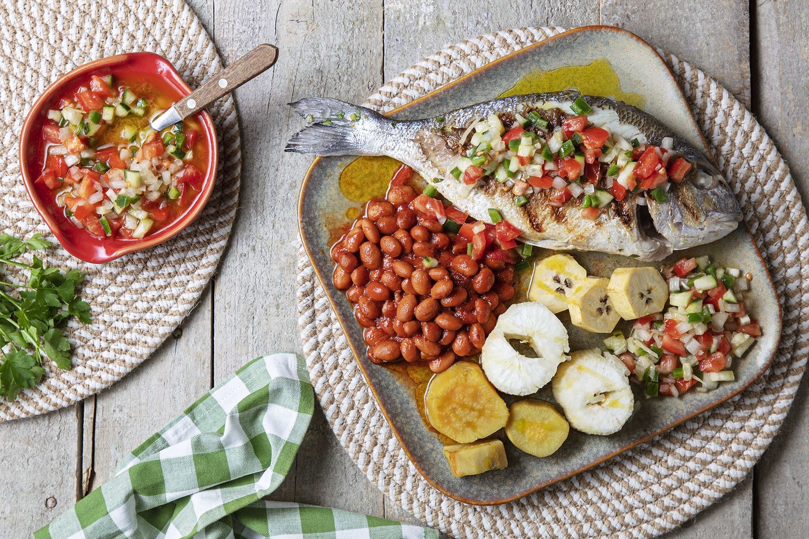

Mufete
2 servings | Time: 45+ minutes

Ingredients
- 250g cooked butter beans
- 100ml tomato pulp
- 1 bay leaf
- 1 onion, chopped
- Garlic, minced
- 1 green pepper, chopped
- 1 lemon
- 2 vine tomatoes
- 1 cucumber
- 2 medium fish
- 250g sweet potato, cooked
- 250g cassava, cooked
- Parsley
- Salt
- Pepper
Instructions
- Prepare the beans. In a pan, sauté a chopped onion and garlic in 3 tablespoons of olive oil.
- Add the cooked beans, bay leaf and tomato pulp. Season with salt and pepper and cook over low heat for 15 minutes.
- In a salad bowl, add the chopped pepper, tomato and cucumber. Drizzle with lemon juice, three tablespoons of olive oil and season with salt and pepper. Mix and set aside.
- Heat a grill or some coals and cook the fish seasoned with salt.
- Drizzle the fish with the remaining olive oil and sprinkle with parsley.
- Serve with beans, salad, sweet potatoes, cassava and banana bread.